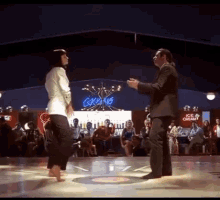

I don't really have a lot to say about it.
I don't really care about perfomances and all of that,
but the movie packs an emotional punch like nothing I've ever watched before.
I think I'm just the kind of guy that type of movie will effect.
I don't really remember what the movei is about, but I do remember that it was chill and movies should be.
Tarantino doesn't force feed you characters. They are there for you to like or dislike. Like real life.
The movie doesn't make it obvious what my feelings on the movie should be. And I REALLY like that.
And this dance...

Never watched the movie, but from what I've seen, it might as well be my favorite one.
I probably don't want to watch it because I don't want to ruin the emotional emprint
that movie has on me (based on shorts on Instagram)